Western & Northern Africa Database
The recorded history of Cote d’Ivoire goes back to 1637, when French missionaries landed at the inhospitable coastline near Assignee, near what was then the Gold Coast (now Ghana). In the 18th Century, the country was invaded from present-day Ghana by two related Akan groups – the Agnis, who occupied the southeast, and the Baoules, who settled in the central section. In 1843-44, Admiral Bouet-Williaumez signed treaties with the kings of the Grand Bassam and Assinie regions, placing their territories under a French protectorate. Subsequently, French explorers, missionaries, trading companies, and soldiers gradually extended the area under French control inland from the lagoon region. Cote d’Ivoire officially became a French colony in 1893, but complete pacification was not accomplished until 1915. The railway from the coast at Abidjan was started in 1903, but reached Bobo Dialassou only in 1935, before subsequently being built to Ouagadougou, in Burkina Faso. French policy in West Africa was following the philosophy of "association," meaning that all Africans in Cote d'Ivoire were officially French "subjects" without rights to citizenship or representation in Africa or France. During World War II, the Vichy regime remained in control until 1943, when members of Gen. Charles de Gaulle's provisional government assumed control of all French West Africa. However, it was not before the Brazzaville Conference, in 1944, that French citizenship was granted to all African "subjects," the right to organize politically was recognized, and various forms of forced labour were abolished. In 1947 also the colony of Upper Volta (now Burkina Faso) was separated off from Cote d’Ivoire.
The population of the country includes many groups which straddle the frontiers with neighbouring states, including Kwas from southern Ghana, or Mandes from Guinea. Like Nigeria or Sudan, Cote d’Ivoire was created by colonialists without regard to the local people – and without any considerations for a marked contrast between the Muslims living in the north and the mainly Christian population in the south.
A turning point in relations with France was reached with the 1956 Overseas Reform Act (Loi Cadre), which transferred a number of powers from Paris to elected territorial governments in French West Africa and also removed remaining voting inequalities. Two years later Cote d’Ivoire became an autonomous republic within the French community. This was a result of a referendum that brought community status to all members of the old Federation of French West Africa - except Guinea. Cote d'Ivoire became independent on August 7, 1960, and permitted its community membership to lapse.
The leading pre-independence political party was Parti Democratique de la Cote d’Ivoire (PDCI), founded by Felix Houphouet-Boigny, who was also elected the first President of the republic, in 1960. Houphouet-Boigny was founder of the Syndicat Agricole Africain, an organization that won improved conditions for African farmers and formed a nucleus for the PDCI. Subsequently, he was elected to the first Constituent Assembly, and representing Cote d'Ivoire in the French National Assembly from 1946 to 1959.
Cote d’Ivoire showed remarkable political stability from 1960 until late 1999, and was considered a haven of peace and prosperity, despite essentially being under a one party rule until 1990, when the first multi-party elections were held. Until the death of Houphouet-Boigny, in 1993, the country maintained a close political allegiance to the West, remaining stabile while most of the other countries in the region were going through countless military coups, brutal civil wars and developing ties with the USSR or China, resulting in many failed experiments with Marxism. Houphouet-Boigny’s successor, President Henri Konan Bedie, was especially familiar with the USA, having served as ambassador in Washington DC for years.
Original Air Force
The Force Aérienne de la Cote d’Ivoire ("FACI" - Ivory Coast Air Force) was officially formed with French support in 1961, around three Douglas C-47s. In the period between 1962 and 1965 also seven MH.1521 Broussard STOL utility aircraft were added, subsequently replaced by three Reims-Cessna 337Es and three Reims-Cessna 150s. In the early 1970s, the French also supplied a number of Aérospatiale Alouette II and SA.316B Alouette III helicopters, reinforced in the 1980s by three Aérospatiale SA.330H Pumas.
Meanwhile, the FACI – organized in a number of Training and a single Presidential Flights – formed an Escadrille de Chasse (Fighter Flight), equipped with six Dassault/Dornier Alpha Jet CI light attack and training aircraft. These entered service in October 1980, and were based at Bouake AB, in central Cote d’Ivoire. Planned orders for six additional examples were cancelled in 1983, although an additional Alpha Jet was supplied late that year as attrition replacement. Alpha Jets and French-trained Ivorian crews that frequently exercised with the Armeé de l’Air, made the FACI the most potent air force in this part of Africa.
| 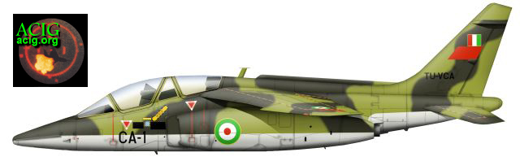 |
| FACI received six Alpha Jets in October 1980. These were coded TU-VCA/CA-1, TU-VCB/CB-2, TU-VCC/CC-3, TU-VCD/CD-4, TU-VCE/CE-5 and TU-VCF/CF-6. Cote d'Ivoire originally intended to purchase another batch of six, but this was never delivered, although one additional Alpha Jet - TU-VCG/CG-7 - was delivered in late 1983, as attrition replacement. All Alpha Jets were in service with Escadrille de Chasse, based at Bouake AB. Only two should have survived by the late 1990s. (Artwork by Tom Cooper) |
Spoiled Elections
Falling market prices for Cote d'Ivoire's primary export crops of cocoa and coffee put immense pressure on the economy and the Bedie presidency: government corruption and mismanagement, as well as a struggle for power, led to steep reductions in foreign aid, in 1998 and 1999, and eventually to the country's first – but bloodless – coup, on December 24, 1999, that brought Gen. Guei to power. Guei formed a “government of national unity” and promised free elections. A new constitution was drafted and ratified by the population in the summer of 2000, retaining clauses that underscored national divisions between north and south, Christian and Muslim, which were growing since Houphouet's death.
Elections were scheduled for fall 2000, but when the general's handpicked Supreme Court disqualified all of the candidates from the two major parties – the PDCI and Rassemblement des Republicaines (RDR) - Western election support and monitors were withdrawn. The RDR called for a boycott, setting the stage for low election turnout in a race between Guei and Front Populaire Ivoirien (FPI) candidate Laurent Gbagbo. When early polling results showed Gbagbo in the lead, Guei stopped the process – claiming pooling fraud: he disbanded the election commission and declared himself the winner. Within hours Gbagbo supporters took to the streets of Abidjan causing a bloody fight as crowds attacked the guards protecting the presidential palace. Many gendarmes and soldiers joined the fight against the junta government, forcing Guei to flee.
Having indeed gained the most votes, Gbagbo was declared President, but then the RDR took the streets – calling for new elections because the Supreme Court had declared their presidential candidate and all the candidates of the PDCI ineligible – resulting in more violence as forces loyal to the new government joined the FPI youth to attack RDR demonstrators. Hundreds were killed in the few days that followed before RDR party leader Ouattara called for peace and recognized the Gbagbo presidency.
On January 7, 2001, there was another coup attempt, which failed. During the following municipal elections the RDR – that previously boycotted the presidential and legislative elections – won most of the seats, followed by the PDCI and FPI. The calm situation finally resulted in the EU supplying some economic aid during the following summer, and the International Monetary Fund (IMF) negotiating with the government. By 2002, the every day life began to return to normal for Cote d’Ivoire citizens, especially after President Gbagbo formed a government of national unity that included the RDR party.
Civil War
On 19 September 2002 rebellious exiled military personnel and co-conspirators in Abidjan simultaneously attacked government ministers as well as military and security facilities in Abidjan, Bouake, and Korhogo. In Abidjan, government forces stopped the coup attempt within hours, but the attacks resulted in the deaths of Emile Boga Doudou, Minister of Interior, and several high-ranking military officers – including Gen. Guei.
By the time the FACI was almost non-existent. Only a single Cessna 421 Golden Eagle remained operational (it was sporadically used for reconnaissance), together with the presidential Gulfstream III, and a pair of Eurocopter AS.365C Dauphin IIs. The Alpha Jets were all inoperational, and "stored" at Bouake: during this coup all were captured by the "mutineers", who subsequently threatened to use them for attacking Abidjan. This threat was serious, then the coup plotters proved well organized and disciplined, while the under-equipped and meanwhile mistrusted Forces Armées Nationale de Côte d’Ivoire (FANCI) have proven incapable of preventing the rebellion from seizing the northern half of the country.
Almost immediately after the coup attempt the government launched an aggressive security operation in Abidjan, whereby shantytowns – populated by thousands of immigrants and Ivorians – were searched for weapons and rebels. In the process of this action the security forces burned down or demolished a number of such places and displaced over 12.000 people.
Eventually, the failed coup attempt quickly evolved into a rebellion, splitting the country in two. The rebels, calling themselves the "Patriotic Movement of Cote d'Ivoire" (MPCI), retained control in Bouake and Korhogo, and within 2 weeks moved to take the remainder of the northern half of the country, which is ever since separated from the south. Soon enough they were advancing towards Abidjan.
French Intervention
Just when the rule of President Gbagbo appeared to be short of collapse, France began deploying troops to Cote d’Ivoire. On 22 September, the Operation "Licorne" (Unicorn) was launched, with the limited aim of evacuating foreign nationals from the north of the country. Two companies of the 1 RCP (Régiment de Chasseurs Parachutistes) arrived from Gabon to support the Marines of the 43 BIMa (Bataillon d'Infanterie de Marine), already based in Abidjan. Air support was limited to a single Fennec light helicopter, which was reinforced by two SA.330 Cougars of the COS (Commandement des Opérations Spéciales), and a Transall C.160 of ET 2.64. All these aircraft arrived in Cote d'Ivoire between 22 and 29 September 2002, while another Transall, four Gazelles from the 5 RHC and two Pumas were added subsequently. During operations one French helicopter was damaged by small arms fire while operating over rebel positions. The French returned fire, destroying a 4x4 pick-up, used as troop transport, in Daloa area.
US forces became involved as well. The USMC deployed C-130 Hercules transports, Sikorsky CH-53E Sea Stallion and UH-60L Blackhawk helicopters crewed by special forces to evacuate foreign nationals from Korhogo.
The presence of French paras between Bouake and Yamoussoukro eventually stopped the rebel advance and in October 2002 Paris forced the MPCI to sign a ceasefire, as well as an agreement for French forces to monitor the ceasefire line. The aim of the Operation Licorne was changed to that of separating the belligerent parties as President Gbagbo also accepted the idea of a cease-fire, but actually all involved parties used the break in fighting to regroup and improve their armament and positions.
Coupling contacts with Russian arms merchants based in the Middle East, the Government ordered several shipments of weapons and ammunition, and these began arriving aboard Ilushin Il-76 transports from Kyrgyzstan and several other former Soviet republics. The Il-76 brought also two Mi-8Vs, together with their Bulgarian crews, as well as a single Antonov An-32 transport. The two helicopters and the An-32 were subsequently used to haul troops and supplies to the fronts at Yamoussoukro and Daloa, as well as for casualty evacuation.
New Rebellion...
Barely a month after the successful French intervention two new groups of rebels emerged in the west of Cote d’Ivoire: the Mouvement Populaire Ivoirien du Grand Ouest (Ivorian Popular Movement for the Great West – MPIGO) and the Movement for Justice and Peace (MJP). MPIGO (which includes also numerous Liberian fighters and members of the notorious RUF) and MJP were allied with the MPCI, and the three groups subsequently began calling themselves the "New Forces." Ever since this organization came into being Cote d'Ivoire is effectively split in two, with the larger northern part of the country being under Muslim, and the southern under control of population that is Christian in majority.
The French were quite soon on a collision course with MPIGO: on 29 November 2002 two French helicopters engaged a rebel column that approached the airport of Man, held by a platoon of 2 REP (Régiment Étranger de Parachutists), supported by two ERC-90 Sagaie armoured cars of the 1 RIMa (Regiment d'Infanterie de Marine), with unknown effects. At dawn of the following day two Aerospatiale SA.342 Gazelle Canons opened fire on MPIGO fighters in the same area again, as Puma and Cougar helicopters flew in two additional squadrons of 2 REP, while evacuating a total of 150 foreign nationals.
...and a New FACI
As mentioned above, the FACI was left without even a single operational Alpha Jet by the time of the coup on 19 September 2002. The last flyable example was CG-7, seen for the last time in fully operational condition - but badly worn-out camouflage pattern - in April 1994. The remaining four (out of original six) Beech F.33s were useless as well. Otherwise, a single Cessna 421 remained in service after the coup, together with two AS.365C Dauphin IIs, and a newly acquired Eurocopter SA.330 Puma.
Instead, from late summer 2002, the FACI was revitalised by acquisition of a additional aircraft and helicopters, the first of which began arriving in October and November. Within just a few weeks, a completely new air force was founded, including four Su-25s (all from Belarus and including two Su-25UBs), two MiG-23MLDs (from Bulgaria), and four Mi-24s from Bulgaria.
The first three Mi-24s arrived in late 2002: two Mi-24Ds were used operationally, while the third example - a Mi-24P armed with 30mm twin-barrelled gun - was apparently held back as source of spares. Their pilots are South African, Scandinavian and French, and are known to have previously flown Mi-24s in Sierra Leone as well. Maintenance crews come from the Ukraine and Belarus. Unlike the situation in Sierra Leone, however, where the local Army took care to establish connection between the mercenaries and the international troops based in the country, there was no liaison officer that took care about communication between the Ivorian mercenaries and French troops.
The FACI Mi-24s became operational already on 15 December of that year, when a single Mi-24 rocketed a village in northern Cote d'Ivoire killing a number of civilians. On 27 December, two of them destroyed a rebel ammunition dump and fuel depot near Vavoua. In other operations Mi-24s were also used to attack rebel columns moving along "bush roads" connecting Bouake, Vavoua, and Man. Finally, on 31 December two Mi-24s attacked a barge ferry to Menakro, but (again) killed a number of civilians, raising international protest in reaction.
Contrary to the situation in Sierra Leone, where the foreign mercenaries were activelly cooperating with UN-peacekeepers, no such contacts were established in Cote d’Ivoire. There the mercenaries – several of whom were inexperienced in flying combat aircraft and helicopters – operated alone, with little support even from the FANCI. Thus, despite increasing activity of FACI Mi-24s, Man fell to MPIGO, on 19 December 2002, and subsequently the rebels became known for committing atrocities against civilian population in the area. Even more so, they clashed with French again: on 21 December, French Gazelles had to provide support to a platoon of the 1 RHP (Régiment de Hussard Parachutiste), attacked at Duékoué, persuading the rebels to stop infiltrating French positions.
Finally, on 28 December 2002 the French Navy LSD La Foudre (original French designation for ships of this class is "Transport de Chalands de Débarqument"), arrived in Abidjan with over 1.000 additional French troops. Meanwhile, the French Naval Aviation had already a single Dassault Atlantique deployed in Dakar, which was used for electronic and visual reconnaissance against the rebels. Although not entirely suited for such task, the aircraft proved indispensable. During the fighting in Duékoué, for example, the crew of the Atlantique was able to warn the local commanders of approach of even small rebel units mounted on 4x4 pick-ups. No less but 30 rebels were killed and several French troops injured during the battles in this area.
| 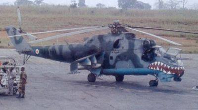 |
| The Force Aérienne de la Cote d'Ivoire (FACI) is known to have operated four Mi-24s, two of which were acquired from Belarus and two from Bulgaria since mid-2003. One of these was coded TU-VHO, and carried large "sharkmouth" insignia - as seen here. (Photo: source unknown, via ACIG.org forum) |
| 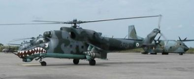 |
| Left-hand view of FACI Mi-24 coded TU-VHO. It remains unknown if this was the helicopter destroyed by French special forces during attack against Yamoussoukro AB, on 5 November 2004. This photograph was taken at Abidjan IAP (note French Air Force Noratlass in the background). (Photo: source unknown, via ACIG.org forum) |
Reconciliation Attempt
With a significant force deployed in Cote d'Ivoire, in January 2003 the French leadership declared initialisation of attempts at conciliation between the warring parties. Any hopes of an early peace proved in vain, however as even between 2.500 and 3.000 troops proved insufficient to maintain the east-west ceasefire line. Therefore, in January 2003, the ECOWAS (Economic Community of West African States) deployed additional 1.500 peacekeepers into Cote d’Ivoire as well, including units from Benin, Ghana, Morocco, Niger, Senegal and Togo. These troops and political pressure from Paris resulted in a French-brokered Linas-Marcoussis Accord, in which all the major political parties agreed to a power-sharing national reconciliation government, which was to include New Forces as well. The parties agreed to work together on modifying national identity, eligibility for citizenship, and land tenure laws which many observers see as among the root causes of the conflict.
The Linas-Marcoussis Accord also stipulated a UN Monitoring Committee to report on implementation of the accord. In early 2003 President Gbagbo formed a government of national reconciliation with 41 ministers, but this die not meet until mid-April, when international peacekeeping force was finally in place to provide security for New Forces ministers.
Once again all the involved conflict parties exploited the quite phase to re-arm and reorganize. The FACI was reinforced by two additional Mi-24Vs acquired from Belarus, and first seen in Cote d'Ivoire in February 2003; two IAR.330 Pumas in VIP-configuration (delivered from Bucharest on 16 May 2003), and two IAR.330 Pumas in SAR/multi-role configuration.
In addition to helicopters, Cote d'Ivoire also acquired two MiG-23MLD interceptors. Both aircraft (originally serialled "204" and "219") were purchased from the company Metalika, based in Bulgaria. Their shipment was organized in April 2003, from Sofia IAP, with Il-76s of Atlant Soyuz airline.
| 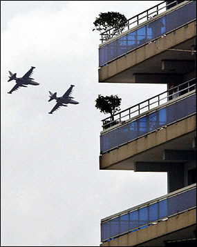 |
| Delivery of Su-25s to Cote d'Ivoire became known in mid-2003, when two were sighted on Abidjan International Airport. According to French military sources the both Su-25s became operational soon after; independent sources, however, stressed seeing them in non-operational condition as late as November last year. Exact origin of these two fighters and details about their camouflage and markings remain unknown. Certain is only that both were destroyed in an attack of French special forces against Yamoussoukro AB, on 5 November 2004. (Photo: AFP) |
Finally, during 2003 the FACI acquired also four Sukhoi Su-25s from an unknown source. These included two single-seat Su-25s and two two-seaters. The new aircraft and helicopters were initially serviced by the Ukrainians and some Belarusian personnel, until the French forced the government to fire most of them. According to unconfirmed reports some of the Mi-24 pilots were South Africans, and some even French mercenaries. The FACI then prepared six own pilots for Mi-24s and Su-25UBs, and also a group of own technicians, all of whom went through a conversion course in the Ukraine.
The first two FACI fast-jet pilots were apparently ready already by 23 June 2003, then on this date the Cote d'Ivoire daily newspaper "Abidjan Le Patriote" reported that the first two MiG-23 fighters, "purchased from Russia" (sic: these two fighters were actually purchased from Bulgaria) began flight testing.
The Ivorian government also purchased two Strikemaster T.Mk.87s from Botswana. This acquisition was originally stopped and both aircraft impounded on Malta. However, eventually they found their way to Cote d’Ivoire – only to be used, according to unconfirmed reports, for “reconnaissance.” The first of two Strikemasters was the former Botswana Defence Force “QJ-4” (ex G-UNNY) and was delivered painted in original camouflage pattern but already coded “TU-VRA”. The other example, coded “TU-VRB”, was former RNZAF NZ6361, previously coded G-BXFP, and then “QJ-5” while in service with Botswana AF.
Camouflage patterns of new FACI aircraft and helicopters were very different. While the two Strikemasters were camouflaged in a wrap-around pattern of tan and light green overall, the two MiG-23MLDs purchased from Bulgaria were left in their colours as on delivery (including their “sharkmouths”). The Sukhois were painted in an unusual pattern consisting of Sand, Brown and probably two shades of Green over, and Light Blue under, and have got fiery sharkmouths. The Mi-24s were camouflaged in Dark Grey and Dark Green over, and Light Blue under, and at least two have got sharkmouths as well. Both VIP-Pumas and one of the Mi-8s were painted in white, and wore standard FACI codes, based on civilian system.
The registration of the second MiG-23MLD remains unknown, but the one known was applied in Black, outlined in White; Su-25UBs were serialled with Red "Bort numbers", outlined in White; while Mi-24s and other helicopters have got usual FACI codes, based on civilian registration, applied in Black.
Known registrations are or were as follows:
- LZ-CAE: Mi-8V (overall white, ex-Bulgarian, seen in December 2002)
- LZ-CAF: Mi-8V (overall white, ex-Bulgarian, seen in December 2002)
- TU-VHC: MiG-23MLD (ex "204", seen in early 2005)
- TU-VHE: IAR.330 Puma (seen in summer 2003)
- TU-VHL: Mi-24 (dark green/grey camo and sharkmouth)
- TU-VHO: Mi-24 (dark green/grey camo and sharkmouth, first seen in December 2002)
- TU-VH?: Mi-24 (dark green/grey camo and sharkmouth)
- TU-VHT: Mi-8 (painted overall white)
- TU-VRA: Strikemaster T.Mk.87 (ex G-UNNY)
- TU-VRB: Strikemaster T.Mk.87 (ex G-BXFP)
- Red "20": Su-25UB
- Red "21": Su-25UB
- Red "22": Su-25
- Red "23": Su-25
| 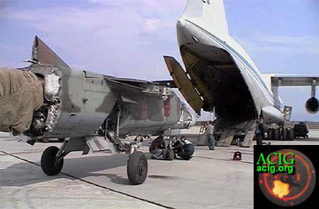 |
| Former Bulgarian MiG-23MLD "204" as seen being loaded onto an Il-76 transport belonging to Atlant Soyuz airline, for a ferry flight to Cote d'Ivoire. (Photo: Vega Airlines, via Alexander Mladenov) |
| 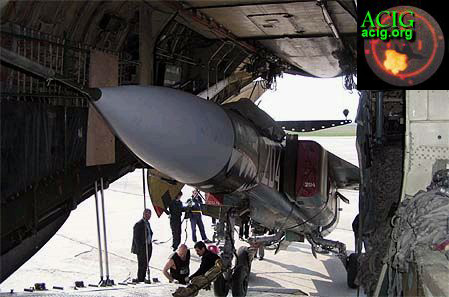 |
| "204" as seen being loaded onto an Atland Soyuz Il-76. The transport of the two MiGs was organized by Vega Airlines, a Bulgarian company which shipped them on behalf of the company that sold them to Cote d'Ivoire - Metalika, also based in Bulgaria. The aircraft is still wearing sharkmouth insignia and its BuAF serial in white: it is likely that the serial was removed upon arrival in Cote d'Ivoire, but it remains unclear if the same happened to the sharkmouth. (Photo: Vega Airlines, via Alexander Mladenov) |
| 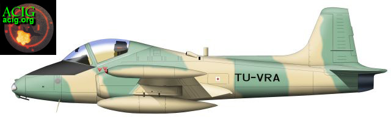 |
| Cote d'Ivoire acquired two Strikemaster T.Mk.87s from Botswana. One of these was seen already wearing FACI camouflage pattern and code TU-VRA when impounded on Malta, on 17 March 2003. Eventually, the Ivorians found the way to bring both of these aircraft to their country. One was destroyed in French attacks on 6 November at Yamoussoukro, but the other was ever since seen not only at Yamoussoukro AB, but also flying reconnaissance missions over central Cote d'Ivoire. (Artwork by Tom Cooper) |
Corruption, Demonstrations, and expulsion of Westerners
Corruption within the government and authorities remained bad. An Australian crew that was ferrying a Boeing 727 from South America to South Africa and made a stop at Abidjan IAP, in 2003, was charged with fees between $800 and 8.000 from no less but four different authorities on the airfield – just for having their aircraft pushed back into parking position. Eventually, they came away with help of French peacekeepers, but not before paying $1.500 to the local authorities and seeing two Su-25s and the surviving Puma helicopter (now used as VIP-transport) in one of the hangars.
Other pilots that operated from Abidjan were reporting being shot at by small-arms fire and even RPGs while in landing pattern or while taking off from the airfield. This came in the aftermath of a new crisis. Namely, while on 4 July 2003, the government and New Forces militaries signed an "End of the War" declaration, with which the authority of President Gbagbo was recognized and all involved parties agreed to work on implementation of the Linas-Marcoussis Accord and a program of Demobilization, Disarmament and Reintegration (DDR), the peace was not to last for very long. Although the new government is considered as indeed “neutral” by outside powers, the New Forces eventually halted the process of implementing the Linas-Marcoussis Accord. In early December 2003, in the face of pro-government mobs besieging several French military bases in Cote d’Ivoire and demanding their withdrawal – the New Forces finally declared their withdrawal from the long-delayed disarmament process, warning that a new war with the government was imminent. On 2 December the rebels issued an ultimatum on the French to pull out from ceasefire line or face attacks on estimated 16.000 French civilians and 4.000 troops living in the country. Since then a number of minor attacks was registered.
 |
| FACI Mi-24 seen in flight over Abidjan - the economical capital of Cote d'Ivoire. (Photo: AFP) |
On 25 March 2004 various political parties organized a demonstration against the government. This was suppressed by security forces and left over 100 killed in Abidjan in an action described by the United Nations High Commissioner for Human Rights as, “indiscriminate killing of innocent civilians and the committing of massive human rights violations". The PDCI – meanwhile affiliated with the “Marcoussists” – suspended its participation in the government, and was followed in this by other political parties. Consequently, while interests of Christian southerners prevailed in the struggle for power over those of mainly Muslim northerners – many of which have meanwhile had their citizenship removed by the government - Cote d’Ivoire remains divided and the government is nowhere near establishing control over areas held by New Forces.
Since early June 2004, there was a series of attacks on French citizens and UN operatives in Cote d’Ivoire, undertaken by pro-Gbagbo youth groups, which set up road blocks in central Abidjan. One of these groups damaged 38 vehicles belonging to the UN peacekeeping force - meanwhile including a Moroccan contingent as well - while another smashed windows on the US embassy.
Simultaneously, a series of skirmishes erupted along the ceasefire line, in which also two French paratroopers were injured. In response to these, on 9 June 2004, FACI Mi-24s flew their first strike against rebel positions near the village of Mamimigui, in the centre of the country, some 370km NW from Abidjan, during which five government soldiers and 15 rebels were killed. Spokesman of the armed forces of Cote d’Ivoire, Col. Jules Yao Yao, specified that Mi-24s were sent to attack several rebel positions. This was confirmed by rebel spokesman, Sidki Konat, who stressed that this was a violation of a ceasefire from 3 May 2003, and that an outbreak of a new civil war was now imminent.
Fatal Attack
In the days following the Mi-24-strike, in late October 2004, the government began massing troops near rebel positions in the west and central Cote d'Ivoire.
Breaking the UN-sponsored ceasefire, on 4 November 2004 two FACI Su-25s bombed rebel-held northern towns of Bouake (the “rebel capital”) and Korhogo, some 225km north of Abidjan, near borders to Burkina Faso and Mali. President Gbagbo was immediately warned by the French President Chirac against any attempts at re-conquering the areas held by the rebels - in terms Laurent Gbagbo subsequently described as, “insulting and humiliating”. Simultaneously, the French requested from the UN additional authorities and specific rules of engagement for the case that a military action in Cote d’Ivoire would be needed: it took New York two days to react.
During this time the FACI Sukhois continued to sporadically strike specific targets in northern Cote d’Ivoire, mainly operating from Yamoussoukro, in the canter of the country - an airfield that was jointly used with French and other UN-forces. According to French military sources, one of the targets attacked was the rebel military HQs in Bouaké. The French troops were of course observing each take-off and landing, and according to their reports most of the Su-25-pilots were Ukrainians and Belarusian.
As the tensions between FANCI and the UN troops rose, the French began preparing for possible action. On Friday, 4 November 2004, three AdA Dassault Mirage F.1CT fighter-bombers were deployed to Libreville, in Gabon, armed with air-to-air missiles. They were to be kept ready for the case that an interception of Su-25s was needed.
Two days later the Ivorians eventually went too far. Around 13:00hrs local time, two FACI Su-25s appeared over the camp of French troops in Bouaké, which was clearly marked by flags and a Red Cross sign on an aid post, as well as easily recognisable because of being situated in the campus of the local Descartes college. This base, situated at least 1.500m from the nearest rebel strongpoint, was already several times overflown by Israeli-made reconnaissance UAVs, deployed by FACI from Abidjan IAP. The Sukhois first made two turns around the French compound before one of them appeared for a third turn and then fired 57mm rockets.
Nine French Marines (including four from RICM – “Régiment d’infanterie-char de marine: a light armoured cavalry regiment equipped mainly with AMX-10RC armoured cars) and an American visitor were killed in place, 23 others injured; two French vehicles and several containers containing food were destroyed.
Alerted by the unprovoked strike, the Chief of Staff of the French Army ordered the two Sukhois to be neutralized. However, following an intervention by Chirac, the order was extended to the whole FACI. The Ivorian government immediately offered an apology, claiming that attack was flown in mistake: the first view, it appeared that the French must have been hit due to target-misidentification by the Su-25-pilot, then it was very unlikely that the government - regardless under what pressure from own population - would openly provoke France.
While it is very unlikely that a pilot who started from an airfield shared with French forces would execute such an attack by purpose, videos of the attack showed the Sukhoi in question flying very low over the French base, then turning around and firing rockets. Regardless how problematic target identification can be from a fast jet moving at low level, it was very unlikely that the Su-25-pilot could indeed have attacked the French compound "by mistake".
| 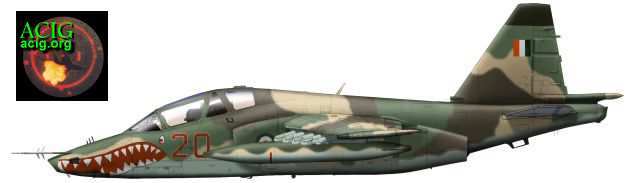 |
| Above and bellow: Cote d'Ivoire is known to have acquired four Su-25s, including two Su-25UBs and two single-seat Su-25s, all from Belarus. Like most of the FACI combat assets these aircraft are decorated with fierce sharkmouth insignia. New for Forces Aériennes Cote d'Ivoire was the application of the "bort" number - red 20, 21, 22 and 23, outlinned in white. All the previous FACI aircraft and helicopters were carrying what were essentially civilian codes. Originally, Belarussian and Ukrainian "contract" pilots were flying these aircraft. In March 2004, they were expulsed by French peacekeepers and subsequently replaced by six Ivorian pilots. Armament noticed in use with FACI Su-25s so far were UV-57-32 rocket pods and RBK-275 bombs; launcher rails for R-60 air-to-air missiles were carried as well as RBV-800 drop tanks. (Artwork by Tom Cooper) |
Swift and Lethal
Around 14:15hrs the French went into action as the two Sukhois landed at Yamoussoukro, where they were to be rearmed and refuelled. While technicians were servicing them, and stacking bombs behind the planes, some 650 meters away, inside the compound occupied by a detachment of French troops operating in the frame of the Operation “Licorne”, Lt. Franck Bellamy prepared his marines of the 2e RIMa for attack. They were waiting as long as possible, until there was, “a minimum of people around the planes”. Then the French fired two Milan ATGMs. Both weapons were aimed at noses of Sukhois, in order to avoid unnecessary "collateral damage": a direct hit at the fuel tank of a fuelled Su-25 would cause an immense conflagration.
Apparently, only one missile scored a direct hit, disabling one of the Sukhois: the Su-25UB "Red 21" was hit in front of the cockpit, while the "Red 22" suffered some damage to the spin. The first aircraft suffered considerable damage, and might have been a write-off, while the second did not suffer any kind of major damage and was surely repairable. Despite an attempt to save lives of Ivorian technicians one of them was killed as well. A Strikemaster parked nearby was not damaged.
| 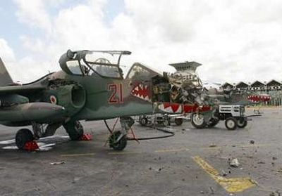 |
| FACI Su-25UB "Red 21" as seen after French attack on Yamoussoukro AB. The plane was hit by a HOT ATGM that took away most of the nose section and badly damaged the right intake. In the rear the second Su-25UB, "Red 20", can be seen, which suffered much less damage: apparently, it was hit right behind the rear cockpit. Amazingly, both planes were left in this position for at least the rest of November 2004: only an earthen wall was risen between them and the side of Yamoussoukro AB held by French troops. (Photo: Xinhua) |
The Ivorian response was clear: shortly afterwards, a FACI Mi-24 attacked the French compound at Yamoussoukro. Before long, the helicopter was damaged by ground fire and forced to distance. The commander of the Operation “Licorne” then issued an order both Mi-24s, a Mi-8 (TU-HVT), and an IAR.330 Puma helicopter based near the presidential palace in Yamoussoukro to be neutralized. The two Mi-24s and the Puma were completely destroyed, while the Mi-8's fin was cut off by another missile.
Meanwhile, troubles flared in Abidjan as well, then the successful neutralization of FACI caused an outburst of anti-French feelings in Cote d'Ivoire. Around 16:00hrs, a large group of Ivorian “patriots” – partisans of president Gbagbo – approached the International airfield and the base of the French 43 BIMa (Marine Battalion). Within minutes also several SUVs, full of Ivorian troops, arrived, from which a number of RPG rounds was fired. One rocket hit a French Air Force C.160 Transall transport aircraft parked on apron. The Marines returned fire, injuring one Ivorian soldier, and then stormed the International Airport, destroying what FACI planes and helicopters they could find in hangars, including one Strikemaster, two Su-25s and two Mi-24 helicopters. Immediately afterwards, an outraged Ivorian crowd entered the main terminal and French troops had to prevent them from plundering the place. The situation on Abidjan IAP remained tense late into the night, with the ALAT SA.342 Gazelle-Viviane helicopters repeatedly attacking bridges from connecting the lagoon of Abidjan with the airfield in order to stem tens of thousands of Ivorians to approach the airfield. According to French reports two cars were destroyed during these attacks, and up to a dozen of civilians injured.
As the sun rose over Abidjan on 7 November 2004, the city was a scene of mass riot and attacks against foreign citizens and their possession. The French troops moved out of their compounds in order to evacuate their compatriots, and several of their columns drove into ambushes set up by Ivorians. Two French troops were heavily injured in these clashes, and also a number of government troops killed. Around 09:00hrs also one of ALAT Gazelles was fired by a ZSU-23 anti-aircraft gun while passing near the presidential palace in Abidjan. The French helicopter returned fire, destroying the emplacement by a single HOT ATGM.
Finally, around 19:00hrs, a column of French armoured vehicles reached also the Hotel Ivoire, a pre-established rallying point for foreign nationals. On the 21st floor a phone-taping centre was found, installed and run by 46 Israeli specialists: officially, they were private contractors, so the French could only order them to leave immediately. All the foreigners and the Israelis were eventually evacuated to Abidjan IAP, from where the Israelis have left on an Italian flight, after boarding directly on tarmac and without passing through the French military camp. Within the following 48 hours no less but five French schools were burned in Abidjan, and dozens of French shops destroyed as well. The remaining French troops at Hotel Ivoire were evacuated before only Tuesday, 9 November – and even then only after lengthy and problematic negotiations with Ivorians, as well as quite a number of very tense situations and minor clashes, in which nine civilians were killed.
No reports about killed foreigners surfaced, but most of these were forced to leave the country in haste – some, reportedly, after being robbed and raped by the locals. Transport aircraft from several air forces were used to evacuate foreign citizens from Abidjan IAP, including a Lockheed C-130 Hercules transport of the Belgian AF, based in Cotonu, in Benin. The plane (coded HC-12) made its first flight to Cote d’Ivoire on 11 November, bringing in drinking water and picking up expatriates. On 12 November, also a Belgian Marine Flight SA.316 Alouette II (“M-1” or “M-2”, coded “OT-ZPA” or “OPT-ZPB”) boarded the Royal Dutch Navy logistical ship Zuiderkruis, heading towards West Africa. The helicopter is planned to be used for support of French and Dutch forces deployed to protect and evacuate foreigners living in Cote d’Ivoire. However, by 15 November 2004, all the foreign nationals were evacuated and most embassies closed, “until further notice”. Consequently, the Dutch government cancelled the mission of Ziderkruis and recalled the ship to her homeport.
| 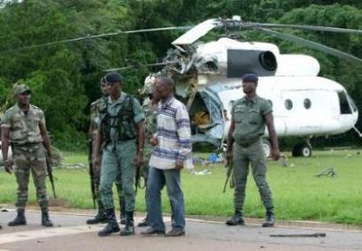 |
| Col. Philippe Mangou (thrid from right), Commander-in-Chief of Cote d'Ivoire Army seen while inspecting wreckage of FACI Mi-8 helicopters destroyed by the French at the presidential residence in Yamoussoukro, on 7 November 2004. Immediately afterwards he ordered a pullback from offensive on rebels in the north. (Photo: AFP) |
Searching for Suspects
Sometimes around 9 November 2004, the French troops at Abidjan IAP impounded an Ukrainian Antonov An-12 transport, while simultaneously arresting 15 FACI pilots and technicians - all mercenaries from Russia, Ukraine and Belaruss - suspecting them for participating in attack on the French base in Bouake, on 6 November. All of the arrested mercenaries were handed over to the Russian consul Popov, on 11 November. Eight Ukrainian citizens were also arrested aboard the An-12 transport. However, they were eventually also all released, together with their aircraft, on 16 November 2004. In the following weeks France also opened a case against an Israeli company known to have supplied light recce-UAVs to Cote d'Ivoire, and operating thise - on behalf of FACI - during the attack against Bouake.
Expecting that the situation in Cote d'Ivoire could escalate, the French then deployed significant assets to central and western Africa. In Cote d'Ivoire there were already SA.342 Gazelles fitted with HOT ATGMs, 20mm cannons and Mistral air-to-air missiles. Additional assets included a detachment of Transall C.160s, Mirage 2000Cs and Mirage 2000Ds in Djibouti; a detachment of Hercules C-130, Transall C.160s and Mirage F.1CT/CRs in Chad, an Atlantique in Dakar, in Senegal, as well as detachments flying Transall C.160s and Fennecs in Senegal and Gabon. Because of the Su-25-strike and additional attacks against Westerners in Abidjan in the following days, three additional Mirage F.1CTs were sent to Libreville, in Gabon.
Eventually, France found itself on a verge of a full-scale war against a government of Cote d'Ivoire – the very same authority it saved from an almost certain demise through intervention against the rebels hardly two year ago. On the contrary, with anti-French feelings running high in the country, but effectively depending on UN – and French – for remaining in power, President Gbagbo is not in an ideal position either.
| 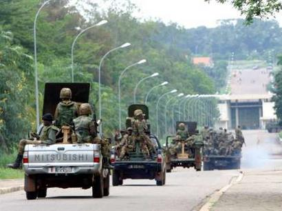 |
| The French strike against FACI aircraft and helicopter in Yamousoukro and Abidjan had already one immediate result: the Cote d'Ivoire Army units were immediatelly pulled back from the frontlines. (Photo: AFP) |
After a special UN permission, the FACI took to the air again on 24 January 2005. On that and the following day one of surviving Mi-24s and a single Strikemaster made several test and patrol flights over Yamoussoukro. Both were subsequently flown out to Abidjan. The UN also permitted the government to restore to flying condition both Su-25UBs damaged at the same airfield: they were not, however, permitted to be armed again.
Since the clash with the French, the Government launched considerable attempts to rebuild and reinforce the FACI again. Both Su-25UBs were repaired and additional Su-25s entered service, joining one surviving Mi-24 and two Strikemasters, while the two ex-Bulgarian MiG-23MLDs were still stored as of late January 2005. The number of foreign mercenaries should have been decreased through 2005, as additional Ivorians qualified as pilots and technicians.
| 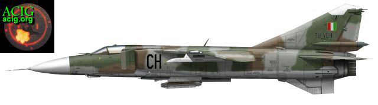 |
| The former Bulgarian Air Force MiG-23MLD "204" as seen in early 2005. Note that the cockpit and front part of fuselage were covered in tarpaulin and the camouflage as well as eventual insignia on that part of the aircraft are not confirmed. Interestingly, the "last two" of the (civilian) registration are replied on the intake, which is relatively unusual for FACI aircraft. The position of the national marking and serial on the fin is also not 100% confirmed, but it is sure that the whole registration is applied in black and outlined in white. (Artwork by Tom Cooper) |
| 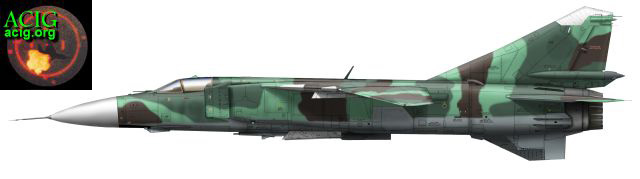 |
| Former Bulgarian Air Force MiG-23MLD "219" should have been delivered in camouflage pattern like this. It also wore sharkmouth insignia on the nose. (Artwork by Tom Cooper) |
Acknowledgements & Remarks
This article is based on details acquired through own research, especially with help from Mr. Alexander Mladenov, in Bulgaria, an article about the situation in Cote d’Ivoire by Steven Smith, published in LeMonde, as well as different news-websites on the internet.
Special thanks also to Mr. Jean-Luc Debroux, from Belgium, for support and details about the Belgian air component involved in the Ivorian crisis.
The article was meanwhile updated four times as additional details became available. Further updates are possible, and authors would appreciate any help, especially in regards of the FACI.
Please note that the sources of some of the photographs used in this article remain unknown. ACIG.org takes full responsibility for using them, and apologises in advance to their rightful owner: the intention is not to misuse the photographs or plagiarise anybody, but solely to inform. Should the rightful owner feel offended by this action, please contact the editorial for their immediate removal. Equally, if there is anybody who knows their rightful owner, please inform the editors of ACIG.org.
© Copyright 2002-3 by ACIG.org
|